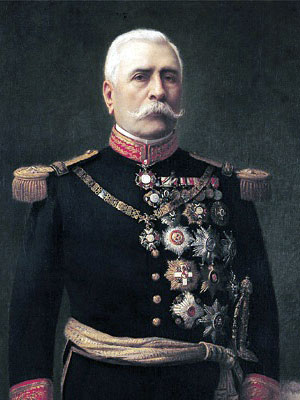
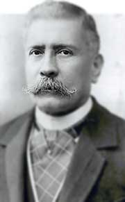
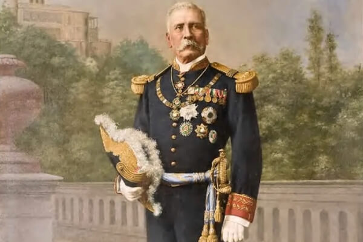

PORFIRIO DIAZ
Biografia
Porfirio Díaz nació el 15 de septiembre de 1830 en Oaxaca, México.
Padres
Fue el sexto de los siete hijos de María Petrona Cecilia Mori Cortés y José Faustino Díaz Orozco. A los tres años quedó huérfano de padre, que murió víctima de una epidemia de cólera.
Estudios
Estudió durante cinco años en el Seminario oaxaqueño. En 1843 entró en el Instituto de Ciencias y Artes a la carrera de Leyes que no terminaría.
Desde 1852 trabajó como armero, maestro de latín, zapatero y carpintero para ayudar en la economía de su familia. En 1854 fue bibliotecario en el Instituto donde estudió derecho.
Militar
En 1855 se produjo la Revolución de Ayutla, en la que tomó las armas, uniéndose en la mixteca al general José María Herrera, así inició su carrera militar. El 22 de diciembre de 1856 era capitán de infantería de la Guardia Nacional.
Participó además en tres guerras: la Guerra Mexicano-estadounidense (1846-1848); la guerra civil (1858-1860) entre liberales y conservadores, llamada Guerra de la Reforma, en la que apoyó la causa liberal de Benito Juárez, y la guerra patriótica (1863-1867) contra Maximiliano I, archiduque de Austria y emperador de México.
El 23 de enero de 1860 sufrió una derrota por parte de las fuerzas reaccionarias que obedecían a Cobos en el pueblo de Mitla. El 30 de enero de 1860 se le nombró jefe de la Brigada de la Sierra, de la División de Operaciones del Estado de Oaxaca. El 19 de abril del mismo año recibió una mención honorífica por el asalto y toma de la manzana inmediata al Convento de la Concepción en Oaxaca.
Durante la Guerra de Reforma libró doce batallas, fue herido de gravedad, creó una policía secreta, sufrió peritonitis, instaló una fábrica de municiones, se volvió experto en ataques súbitos y emboscadas.
No alcanzó la presidencia de México frente a Juárez en 1867, ni tampoco en 1871. Después de cada derrota encabezó infructuosas rebeliones militares, mediante las que pretendía alcanzar el poder.
Presidente de México
En el año 1876 protagonizó una prolongada serie de acciones militares y derrocó al presidente Sebastián Lerdo de Tejada, asumiendo la presidencia de la República.
Porfiriato
Según la Constitución Mexicana, no podía permanecer en la presidencia durante dos mandatos consecutivos, por lo que tuvo que renunciar en 1880, aunque continuó en el gobierno como secretario de Fomento. Fue reelegido en 1884 y consiguió la aprobación de una enmienda a la Constitución que permitía la sucesión de mandatos presidenciales, permaneciendo en el poder hasta 1911. Nueve fue el número de veces que ocupó la presidencia de México.
Durante su mandato (1876-1911), la economía de México se estabilizó y el país experimentó un desarrollo económico sin precedentes: se invirtió capital extranjero en la explotación de los recursos mineros del país; la industria minera, la textil y otras experimentaron una gran expansión; se construyeron vías férreas y líneas telegráficas; y el comercio exterior aumentó. Creó la Universidad Nacional y fomentó la edificación del Palacio de Bellas Artes, también el diseño de colonias como la Guerrero, Vallejo, Santa María la Ribera, Roma y Juárez. Por otra parte, los inversores extranjeros agotaron gran parte de la riqueza del país, casi todos los antiguos terrenos comunales (ejidos) de los indígenas pasaron a manos de un pequeño grupo de terratenientes, y se extendió la pobreza y el analfabetismo.
Dimisión y exilio
Las manifestaciones del descontento social fueron reprimidas duramente hasta que se produjo la Revolución de 1911, encabezada por Francisco I. Madero. Fue obligado a dimitir y a abandonar el país.
Mujeres e hijos
A principios de 1867, fue padre de una hija, Amada, fruto de su relación con la soldadera Rafaela Quiñones. En ese mismo año se casó con Delfina Ortega Díaz, su sobrina carnal, hija de su hermana Manuela, ese matrimonio, que duró hasta 1880, tuvo a sus hijos Porfirio y Luz. Posteriormente conoció a Carmen Romero Rubio, con la que se casó la noche del 5 de noviembre de 1881. Un día después se efectuó la ceremonia religiosa. En viaje nupcial visitaron Nueva York.

.jpeg)

.jpeg)
